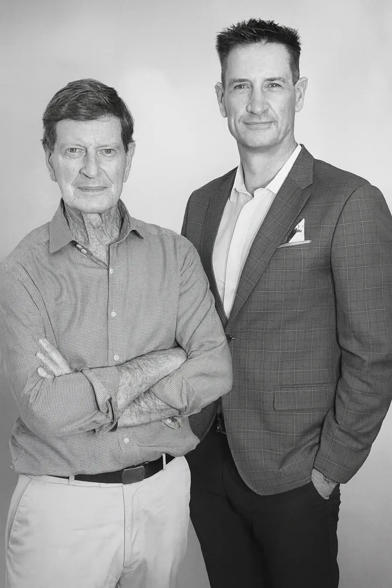

01
Aviation expert witness
Independent technical reports and testimony for civil, planning and regulatory matters.
From the Cockpit to the Courtroom.
Vigilance Aviation is a father and son panel of military trained aviation experts, David Allan and Liam Allan. We prepare independent expert reports, technical opinion and safety analysis for solicitors, barristers, insurers and the courts. Our work is measured and impartial: we give evidence, not advocacy, and the conclusions hold under cross examination.
Independent technical reports and testimony for civil, planning and regulatory matters.
Aircraft handling, flight path and operational decision analysis.
Safety management systems, ISO 9001 / BARS audits and CASA regulatory compliance.
Helipad design and approvals, flight paths, noise and remotely piloted operations.

A Royal Military College Duntroon graduate and former Army officer, Liam has flown military and civil aviation since 1999, including as a Multi-Engine Offshore Captain. He specialises in human factors, safety management and accident analysis.
Flying since 1968, David is among the most experienced helicopter instructors and examiners in Australia. His career spans military aviation, two decades as Head of Training and Checking and four decades as a helicopter examiner.
Vigilance Aviation is based in Noosa Heads, Queensland and supports legal counsel, insurers and aviation organisations across all states and territories. Tell us about the matter and we will respond promptly.
Our first duty is to the court. The opinion is the same whichever side instructs, independent and impartial, by obligation and by habit. Every instruction is conflict checked, and where our independence could be questioned, we decline.